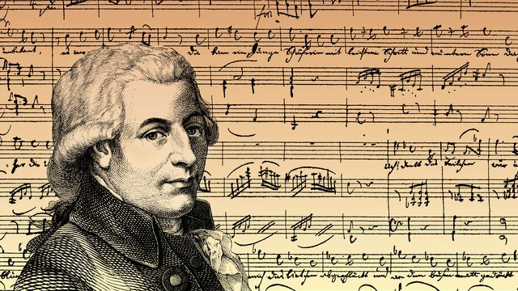

دوره های موسیقی کلاسیک
۱. دوره سدههای میانه (قرون وُسطی)
مقالهٔ اصلی: موسیقی قرون وسطی
قرون وسطی به یک هزاره از تاریخ و تاریخ موسیقی غرب گفته میشود که فروپاشی امپراطوری روم غربی در سال ۴۷۶ آغاز
و با ظهور دورهٔ رُنسانس در اواسط قرن پانزدهم میلادی فرجام مییابد. موسیقی در این هزاره غالباً در انحصار
کلیسا بوده و تکاملِ آن توسط آهنگسازانی صورت گرفت که در خدمت کلیسا بودند و اغلبِ موسیقیهای به جا مانده از
این دوره، موسیقی مذهبی است که متون آن از اِنجیل آمدهاست.
۲. دوره رنسانس
نمونهای از نت نویسی در دوره رنسانس
مقالهٔ اصلی: موسیقی رنسانس
رنسانس (تولد دوباره) به جریان فکری پیچیدهای گفته میشود که بین قرن چهاردهم و شانزدهم میلادی، اروپا را
عمیقاً تغییر داد. در ایتالیا آغاز شد؛ با کشف مجدد نیاکان روم- یونانیشان و تقلید از آنها. ایتالیاییها امید
داشتند بتوانند گذشتهٔ شکوهمندشان را بازسازی کنند. ایدهٔ واقعگرایانهای نبود و ازلحاظ سیاسی به توفیقی دست
نیافت. در انتهای رنسانس، ایتالیا بهجای تبدیل به امپراتوری روم، درگیر همان جنگهایی بود که از زمان سدههای
میانه آغاز شده بود. با این حال، احیای فرهنگ رومی و یونانی ارزشهای جدیدی به ارمغان آورد. ابتدا در ایتالیا و
سپس در سرتاسر اروپا. رنسانس به شکلی دوران کشف دنیا بود. عصری که کلمب، ماژلان، داوینچی، کوپرنیک، گالیله و
شکسپیر را به خود دید. با اشغال آمریکای جنوبی توسط اسپانیا در اواخر قرن پانزدهم و ورود انگلیس به آمریکای
شمالی در اوایل قرن هفدهم، دیگر سرزمین بکری برای اروپاییان وجود نداشت
۳. دورهٔ باروک
تالار بزرگ کنسرت در دوره باروک
مقالهٔ اصلی: موسیقی دوره باروک
این دوره از سال ۱۶۰۰ م شروع میشود و تا حدود ۱۷۵۰ م ادامه مییابد. لغتِ باروک در عالم هنر (نه فقط موسیقی)
معادل استادانه زینت دادن یا ماهرانه درست کردن بهکار میرود که از مشخصات بارز هنر این سالها بودهاست.
موسیقی این دوره، همانند سایر هنرهای همعصر خود، بیانگر اشرافیت و قدرت حکومتهای اروپایی بودهاست. نیاز کلیسا
برای جذابتر کردن نیایش نیز در گسترش این سبک تأثیر بسیاری داشتهاست.
یکپارچگی در حالت موسیقی از ویژگیهای موسیقی این دوره است. از معروفترین موسیقیدانان این سبک میتوان باخ و
ویوالدی را نام برد.
۴. دورهٔ کلاسیک
تالار کنسرت کانتربری در دوره کلاسیک (۱۸۵۲)
مقالهٔ اصلی: موسیقی دوره کلاسیک
دورهٔ کلاسیک سالهای ۱۷۳۰ تا ۱۸۲۰ م را شامل میشود.
قرن هجدهم مصادف بود با جریان روشنفکری یا آزادی اندیشه از بند خرافات، که در آن طغیانی علیه متافیزیک و به نفع
احساسات معمولی و روانشناسی تجربی و عملی، علیه آیین و مراسم تشریفاتی اشرافی و به نفع زندگی طبیعی و ساده،
علیه خودکامگی و به نفع آزادی فردی، علیه امتیازات و حق ویژه و به نفع حقوق مساوی مردم و تعلیم و تربیت همگانی
صورت گرفت. در این دوره، برای اولین بار در موسیقی، این فکر ظهور کرد که موسیقی در حقیقت همانند دیگر هنرها
مقصود و هدفی ندارد، بلکه صرفاً بهخاطر خودش وجود دارد؛ یعنی موسیقی برای خودِ هنر موسیقی موجودیت مییابد. پس
از دورهٔ کلاسیک با هنر موسیقی برپایهٔ ایدهٔ «هنر بهخاطر هنر (هنر برای هنر)» برخورد میشد.
هنر در این دوران، بیشتر متوجه سادگی است تا تزئینات ماهرانهٔ دوران باروک، ولی درزمینهٔ موسیقی، این رویکرد
بهعکس اتفاق میافتد. برخلاف دورهٔ باروک، در دوران کلاسیک، حالتهای مختلف و متضادی در ارائهٔ احساس در موسیقی
وجود دارد. بافت موسیقی کلاسیک نیز بیشتر هوموفونیک است تا پلیفونیک. از هنرمندان برجستهٔ این دوره میتوان از
هایدن، موتزارت، بتهوون و گلوک نام برد.
۵. دورهٔ رمانتیک
ارکستر سمفونیک فیلادلفیا (۱۹۱۶ م)، اجرای سمفونی شماره ۸ گوستاو مالر، آخرین آهنگساز دورهٔ رمانتیک
مقالهٔ اصلی: موسیقی رمانتیک
سبک رمانتیک سالهای ۱۸۲۰ تا ۱۹۱۰ م را شامل میشود. در این دوره، احساسات نقش بسزایی در موسیقی پیدا میکند.
موسیقی در این دوره بهصورت ابزاری در دست آهنگساز برای مطرح کردن احساسات شخصیِ اوست.
توبای واگنر یکی از سازهای بادی برنجی است که در دورهٔ ریشارد واگنر به سازهای بادی اضافه شد، که بعدها نیز در
سمفونی شماره ۷ آنتون بروکنر و بالهٔ دریاچه قو از چایکوفسکی نیز مورد استفاده قرار گرفت. معروفترین آهنگسازان
و موسیقیدانان این سبک فردریک شوپن، فرانتس لیست و فلیکس مندلسون هستند.[۱]
۶. دوره مدرن (قرن بیستم)
مقالهٔ اصلی: موسیقی مدرن
این دوره را دورهٔ مدرنیسم یا نوگرایی موسیقی کلاسیک میدانند. آهنگسازان این دوره هرچه بیشتر سعی کردند تا
کارهای خود را از سبکهای گذشته متمایز و از باورها و قانونهای گذشته عبور کنند.
۷. دوره معاصر
مقالهٔ اصلی: موسیقی کلاسیک معاصر
موسیقی معاصر از سال ۱۹۷۰ م آغاز شدهاست و تاکنون ادامه دارد. آهنگسازان معاصرِ کلاسیک بیشتر به ساختن موسیقی
مینیمال و آوانگارد روی آوردهاند.

sebastian bach
نام تولد یوهان سباستیان باخ
زاده ۲۱ مارس ۱۶۸۵
آیزناخ، تورینگن، آلمان[۱]
خاستگاه آلمان
درگذشته ۲۸ ژوئیهٔ ۱۷۵۰ (۶۵ سال)
لایپزیگ، زاکسن، آلمان[۱]
ژانر باروک
ساز(ها) ارگ، پیانو، هارپسیکورد

beethoven
زادهٔ ۱۷ دسامبر ۱۷۷۰ (تاریخ غسل تعمید)
بن، آلمان
درگذشت ۲۶ مارس ۱۸۲۷ (۵۶ سال)
وین، امپراتوری اتریش
محل زندگی بن (۱۷۷۰–۱۷۹۲)
وین (۱۷۹۲–۱۸۲۷)
ملیت آلمانی
دیگر نامها لودویگ وان بتهوون
(به فرانسوی: Louis van Beethoven)
پیشه آهنگساز، نوازندهٔ پیانو
symphony
ز سمفونی نهم گاهی بهعنوان بهترین اثر بتهوون و یکی از بهترینهای دوران قواعد مشترک یاد میکنند.
حتی برخی بهطور مطلق، این سمفونی را «عظیمترین و بهترین» قطعهٔ موسیقی در دنیای غرب میدانند.

mozart
(زادهٔ ۱۴ نوامبر ۱۷۱۹ - درگذشتهٔ ۲۸ مهٔ ۱۷۸۷) موسیقیدان و معلم موسیقی اتریشی بود. او در شهر
آوگسبورگ در اتریش امروزی به دنیا آمد. لئوپلد مفیم شهر زالتسبورگ (سالزبورگ) در اتریش بود، اما
زمانی طولانی در شهر وین زندگی

symphony
Toccata and Fugue in D minor یکی از قطعات موسیقی ساخته شده به تلاش یوهان سباستیان باخ برای ساز
ارگان است. باخ این قطعه را بین سالهای 1703 و 1708 و در مدت اقامتش در شهر آرنشتات نوشته است. این
قطعه یکی از مشهورترین قطعات باخ است.

symphony
سمفونی شمارهی چهل و یک (ژوپیتر)
ژوپیتر آخرین و طولانیترین سمفونی موتسارت است و به گفتهی یک منتقد روزنامهی گاردین، با تمام
قوای موسیقایی او ساخته شده است. موومان پیچیدهی مولتو آلگرو فرم سونات و فوگ و کنترپوان و البته
ملودیهای دلفریب را گرد هم میآورد.

بتهوون
لودویگ فان بتهوون (آلمانی: Ludwig van Beethoven, [ˈlu:tvɪç fan ˈbe:tˌho:fn̩] (دربارهٔ این پرونده شنیدن)؛ غسل
تعمید ۱۷ دسامبر ۱۷۷۰ – ۲۶ مارس ۱۸۲۷) موسیقیدان و آهنگساز اهل آلمان بود. وی شخصیتی مهم در انتقال بین
دورههای کلاسیک و رمانتیک در موسیقی غرب بود و یکی از بزرگترین آهنگسازان اروپایی به حساب میآید. زندگی
حرفهای او معمولاً به دورههای «اولیه»، «میانی» و «پایانی» تقسیم میشود. دورهٔ «اولیه» حدوداً تا سال ۱۸۰۲
ادامه دارد، دورهٔ «میانی» از سال ۱۸۰۲ تا ۱۸۱۲ را شامل میشود و دورهٔ «پایانی» از ۱۸۱۲ تا زمانِ مرگ وی در سال
۱۸۲۷ است. او در طول زندگی خود آثار بسیاری آفرید که نُه سمفونی، پنج کنسرتو پیانو، یک کنسرتوی ویولن، سی و دو
سونات پیانو، شانزده کوارتت زهی، دو مس و اپرای فیدلیو از آن جملهاند.
موزارت
او فرزند یوهان گئورگ موتسارت (۱۶۷۹–۱۷۳۶) و همسر دوم او، آنا ماریا سولتزر (۱۶۹۶–۱۷۶۶)، بود. رشتهٔ تحصیلی او
الهیات بود که در کنار آن، رشتههایی چون فلسفه و حقوق هم در دانشگاه بِنِدیکتینر (به آلمانی:
Benediktineruniversität) در شهر زالتسبورگ تحصیل کرد. در سال ۱۷۴۷ با آنا ماریا پِرْتْل (Anna Maria Pertl)
ازدواج کرد که ثمرهٔ آن هفت فرزند بود و تنها دو تن از آنان، یعنی ماریا آنا (فرزند چهارم) و ولفگانگ آمادئوس
(فرزند هفتم)، به بزرگسالی رسیدند.
باخ
یوهان سباستیان باخ یکی از اعضای تبار شگفتآور موسیقایی آن عصر بود. در زمانی بیش از ۲۰۰ سال، خاندان باخ توانست
دوازده نوازنده و آهنگساز شایسته و توانا را تربیت نماید؛ و گفته میشود که در این خاندان بیش از ۵۲ منصب
موسیقایی وجود داشتهاست. این بازهٔ زمانی دورانی بود که کلیسا، دولت محلی و طبقهٔ اشراف، حمایتی قابلتوجه از
ساخت موسیقی به شکل حرفهای در سرزمینهای آلمانیزبان و بخصوص در بخشهای غربی تورینگن و زاکسن، به عمل
میآوردند.[۳][۴] پدر سباستیان، یوهان آمبروزیوس باخ، نوازندهٔ چیرهدست ویولن، ترومپتزن دربار و رهبر دستهٔ
نوازندگان شهری در آیزناخ – شهری با جمعیت ۶۰۰۰ نفر - در تورینگن آلمان، میزیست. وظیفهٔ او در این شهر، تنظیم
موسیقی غیرروحانی و شرکت در موسیقی کلیسایی بود. عموهای سباستیان همگی در موسیقی حرفهای بودند که از ارگنواز
کلیسا تا نوازندهٔ دستهٔ موسیقی بارگاه شاهی تا آهنگساز در میان آنها یافت میشد. اسناد امروزی مشخص میکنند که
نام باخ در آن زمان میرفت تا به معادلی برای موسیقیدان تبدیل شود. خاندان باخ هماره به موفقیتهای موسیقایی خود
افتخار میکردند و حدود سال ۱۷۳۵ باخ شجرهنامهای را با عنوان «سرچشمهٔ موسیقی در خاندان باخ»[۵] نگاشت که در
آن به پیگیری نسلهای مختلف دودمانش که در موسیقی به موفقیت دست یافتند، پرداخت.